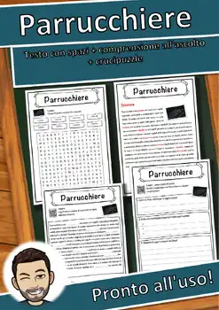
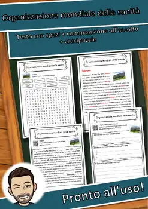
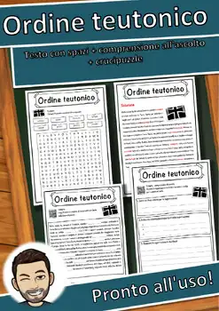
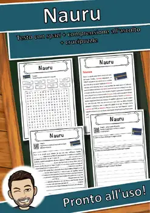
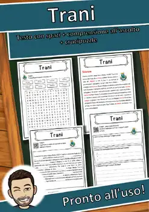
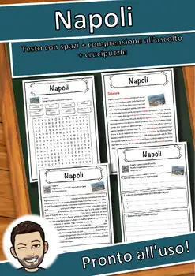
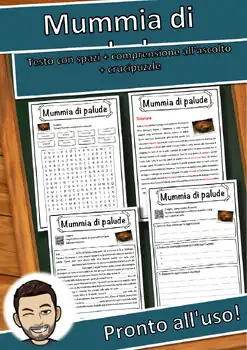
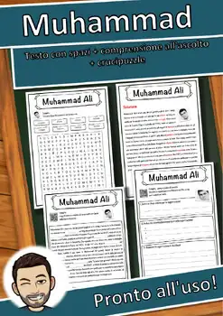

New resources
My newest resources appear here first. The list updates automatically.
48 resources

Musical – Italian Reading Comprehension Worksheet (Scheda): Cloze & Listening
Mimica facciale – Italian Reading Comprehension Worksheet (Scheda didattica)

Passato – Italian Reading Comprehension Worksheet (Scheda): Cloze & Listening

Passaporto – Italian Reading Comprehension Worksheet (Scheda): Cloze & Listening

Pasqua – Italian Reading Comprehension Worksheet (Scheda): Cloze & Listening

Parrucchiere – Italian Reading Comprehension Worksheet (Scheda didattica)

Parotite – Italian Reading Comprehension Worksheet (Scheda): Cloze & Listening
Parlamento europeo – Italian Reading Comprehension Worksheet (Scheda didattica)

Parlamento – Italian Reading Comprehension Worksheet (Scheda): Cloze & Listening

Parkour – Italian Reading Comprehension Worksheet (Scheda): Cloze & Listening

Parigi – Italian Reading Comprehension Worksheet (Scheda): Cloze & Listening

Papa – Italian Reading Comprehension Worksheet (Scheda): Cloze & Listening
Orsacchiotto – Italian Reading Comprehension Worksheet (Scheda didattica)

Organizzazione mondiale della sanità – Italian Reading Comprehension Worksheet

Ordine teutonico – Italian Reading Comprehension Worksheet (Scheda didattica)

Occhio – Italian Reading Comprehension Worksheet (Scheda): Cloze & Listening

Neve – Italian Reading Comprehension Worksheet (Scheda): Cloze & Listening

Nauru – Italian Reading Comprehension Worksheet (Scheda): Cloze & Listening

Naturismo – Italian Reading Comprehension Worksheet (Scheda): Cloze & Listening

Trani – Scheda: testo con spazi vuoti, comprensione all'ascolto e crucipuzzle
Naturalizzazione – Italian Reading Comprehension Worksheet (Scheda didattica)

Naso – Italian Reading Comprehension Worksheet (Scheda): Cloze & Listening
Nascita di Gesù – Italian Reading Comprehension Worksheet (Scheda didattica)

Napoli – Italian Reading Comprehension Worksheet (Scheda): Cloze & Listening
Napoleone Bonaparte – Italian Reading Comprehension Worksheet (Scheda didattica)

NASA – Italian Reading Comprehension Worksheet (Scheda): Cloze & Listening

Myriapoda – Italian Reading Comprehension Worksheet (Scheda): Cloze & Listening

Mustelidae – Italian Reading Comprehension Worksheet (Scheda): Cloze & Listening
Museo all'aperto – Italian Reading Comprehension Worksheet (Scheda didattica)

Mummia di palude – Italian Reading Comprehension Worksheet (Scheda didattica)

Mulino – Italian Reading Comprehension Worksheet (Scheda): Cloze & Listening
Musica tradizionale – Italian Reading Comprehension Worksheet (Scheda didattica)

Musica pop – Italian Reading Comprehension Worksheet (Scheda): Cloze & Listening
Musica elettronica – Italian Reading Comprehension Worksheet (Scheda didattica)
Musica country – Italian Reading Comprehension Worksheet (Scheda didattica)
Museo del Louvre – Italian Reading Comprehension Worksheet (Scheda didattica)
Museo – Italian Reading Comprehension Worksheet (Scheda): Cloze & Listening
North Las Vegas, Nevada – Worksheet: cloze text, listening and word search

Mummia – Italian Reading Comprehension Worksheet (Scheda): Cloze & Listening
Mumbai – Italian Reading Comprehension Worksheet (Scheda): Cloze & Listening

Muhammad Ali – Italian Reading Comprehension Worksheet (Scheda didattica)

Mozambico – Italian Reading Comprehension Worksheet (Scheda): Cloze & Listening

Mouse – Italian Reading Comprehension Worksheet (Scheda): Cloze & Listening

Mountain bike – Italian Reading Comprehension Worksheet (Scheda didattica)

Motore a vapore – Italian Reading Comprehension Worksheet (Scheda didattica)

Motore – Italian Reading Comprehension Worksheet (Scheda): Cloze & Listening

Motocicletta – Italian Reading Comprehension Worksheet (Scheda didattica)

Mosè – Italian Reading Comprehension Worksheet (Scheda): Cloze & Listening
No resources found – try a different search term or filter.